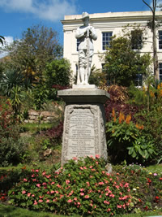
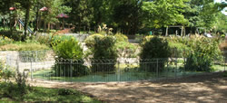

Public Parks & Gardens in Penzance
Morrab Gardens
Morrab Gardens started out as the property of wealthy brewer, Samuel Pidwell. Pidwell built Morrab House in 1841 as his home on a three acre strip of land running from the town centre to the sea front. In fact the word Morrab comes from the Cornish for sea-shore (mor = sea and app = shore)
When in 1889, Pidwell moved, the property was bought by the local council, , for use as municipal park to cater for the ever growing number of tourists. The house became the Penzance town library and the gardens fell under the guardianship of landscape gardener, Reginald Upcher.
Whilst Upcher was largely responsible for the layout of the gardens, Morrab’s reputation for its array of sub-tropical plants was developed somewhat later. Amongst the fine examples of tender and rare plants are huge examples of the ubiquitous cordyline (or Cornish palm), tree ferns, banana plants and Japanese Bitter Orange.
{kind=link}
Various features were added to the gardens over the years starting with the Boer War Memorial in 1904, which is a separate, more secluded section of the gardens with a small statue to commemorate those who gave their lives. Over recent years the statue has suffered from vandalism but has always been restored.
A year later the bandstand was completed. Built with money from local coal merchant JH Bennett, the bandstand was opened with some ceremony and a concert by Penzance Military Band.
Morrab Garden’s other notable feature is the fountain at the top end of the gardens. As a centrepiece it has a seal on a ball balancing a fish spouting water.
{kind=link}
{kind=link}
{kind=link}
{kind=link}
Penlee Park dates from 1865, the park covers 15 acres and hosts Penlee House Gallery & Museum, tennis courts, a football field, a children's play area, a woodland walk, a garden of remembrance and a small open air theatre.
Penlee House and Park were commissioned by John Richards Branwell as a private estate and believed to have been designed by the local architect John Matthews in the highly fashionable Italianate style. In 1918 Penlee was bestowed to Edith and then Alfred Branwell, who with the help of a gardener trained at Kew, set about transforming the park with numerous rare plants, flowers and trees which can still be enjoyed today. The house and park served as a family estate to the Branwell's for many decades and were purchased by Penzance Borough Council in 1946 to serve as a War Memorial after their use as a Civil Defence Centre in the Second World War. Penlee House was opened to the the public as a gallery and museum and the Park and Gardens were open to the public for recreation.
Today, Penlee House Gallery & Museum is home to the Town's historic collections including important "Newlyn School" and "Lamorna Group" paintings and also has temporary exhibitions. It boasts a collection of several thousand local photographs, some dating back as early as the 1870s. The museum has archaeological and local history sections. It also houses the Orangery Cafe & Shop which are open during museum hours.
{kind=link}
Find out more about Penlee House Gallery & Museum
Outside of Penlee house is an historic granite cross which dates from the late 10th or early 11th century. The stone cross once stood in the Greenmarket and was the Market Cross. In its long history it has been moved to many locations in Penzance including Morrab Gardens.
When Penlee was purchased for use as a memorial park the walled kitchen and flower garden was converted into a garden of remembrance, which has recently been replanted with various sub-tropical plants and flowers. The Branwell family's tennis court was also changed into a small open air theatre, seating about two hundred people, which is managed by Acorn Theatre and holds a season of plays from July to September.
{kind=link}
{kind=link}
sections of text - cornwalls.co.uk & wymering.com